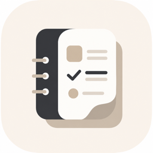
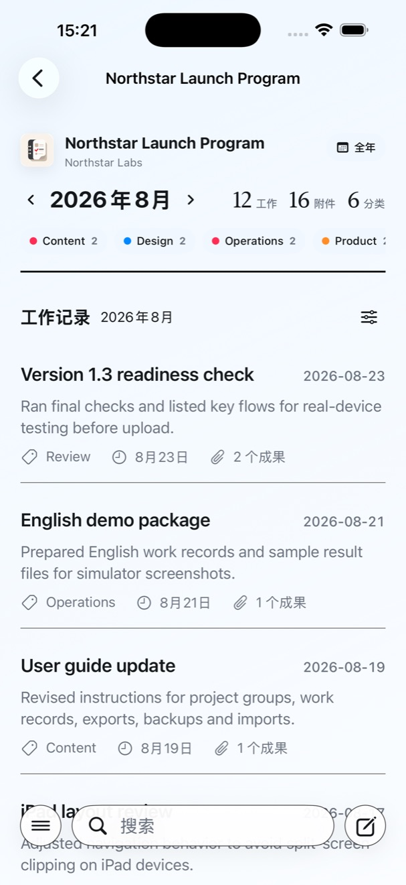
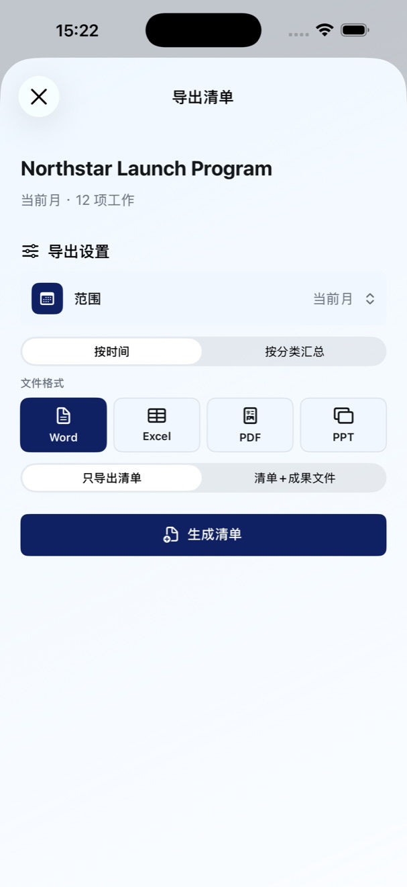
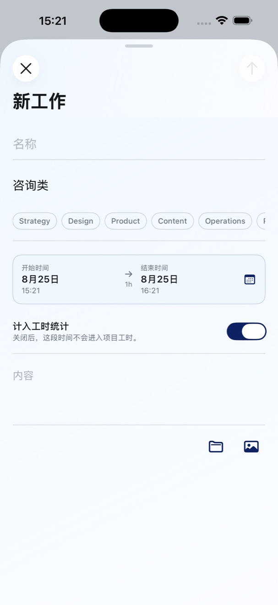
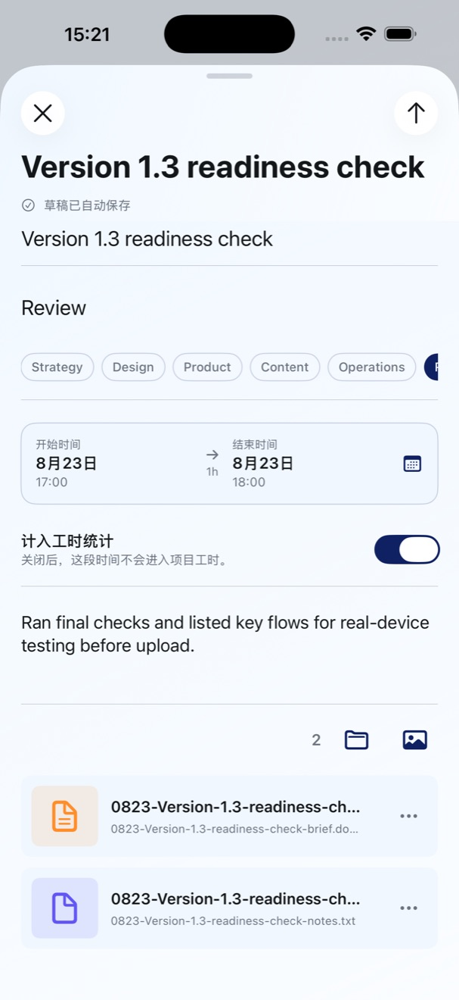

记忆是会过期的
月底才回想这个月做了什么，小事容易遗漏，重要价值也容易被低估。

WorkListWORK RESULTS, ORGANIZEDWORKLIST · 工作成果记录工具
工作不该只留在记忆里。WorkList 把项目、记录和成果放在一起，需要时直接生成专业工作报告。


TodoList 计划要做什么。
WorkList 记录你真正做成了什么。
月底才回想这个月做了什么，小事容易遗漏，重要价值也容易被低估。
文件在文件夹，图片在手机，过程在微信。要交付时，又要到处翻找。
工作已经做完，写日报、月报、述职时却还要重新梳理一遍。
按项目、类别和起止时间记录，草稿自动保存。
文件与图片归到对应工作，支持命名、预览和分享。
Word、Excel、PDF、PPT，一份记录，多种交付。


以下内容以用户反馈的形式展示产品价值，人物与表述为场景化创作，不代表真实用户评价或效果承诺。
以前写月报，先要花很久翻微信和文件夹。现在每次做完随手记下，月底打开 WorkList，导出就是一份完整的工作底稿。
项目经理多项目并行 · 月度汇报
“客户突然问某个阶段交付了什么，以前要逐个文件找。现在打开项目组，工作和成果就在一起。”
咨询顾问 · 成果交付
“最有用的不是又多了一个待办工具，而是方案、修改稿和最终文件终于能对应到具体工作。”
设计师 · 版本与成果归档
“述职时才发现，我不是没有成果，只是它们之前没有被系统地留下来。WorkList 让这些努力变得可见。”
自由职业者 · 述职与复盘
无需 WorkList 账号，无广告追踪。默认本地保存；支持同步的版本可自愿开启 iCloud，在同一 Apple 账户设备间更新工作，附件默认按需下载。同步不代替独立备份。
查看完整隐私政策 →在手机上随手记录，在电脑上整理和交付。
版本以 App Store 为准
适用于 iPhone、iPad；系统要求见 App Store。
记录项目与工作成果，随时整理和导出。
App Store 下载版本 0.1.4 · x64
Windows 10 / 11，Intel 或 AMD 64 位处理器。
下载后打开 .exe 安装程序，按提示完成安装。
下载 Windows 安装包版本 0.1.7 · ARM64
银河麒麟 V10 SP1，ARM64 处理器；面向 Kirin 9000C 电脑。
打开 .deb 安装包安装。已附带 ARM64 本地 AI 运行程序，可在客户端内下载或导入 GGUF 模型，运行效果需实机测试。
下载麒麟安装包Windows 和麒麟桌面版可在“设置 → 软件更新”检查新版本，下载和安装由你确认。iOS 通过 App Store 更新。
统计接入中
| 统计项目 | 累计 | 今日 |
|---|---|---|
| 网页浏览量 | — | — |
| 匿名浏览器访客估算 | — | — |
| iOS · App Store 入口点击 | — | — |
| Windows · 下载入口点击 | — | — |
| 麒麟 · 下载入口点击 | — | — |
下载入口点击不代表下载完成或安装人数；iOS 仅记录 App Store 入口点击。
仅统计本页访问和手动点击下载入口，不统计客户端自动更新，不读取客户端工作资料，无广告追踪。WorkList 统计数据库保存匿名身份摘要、计数和日期。站点托管服务商按各自政策处理运行日志。第一方匿名访客标识有效期为 90 天，服务在 90 天窗口内按浏览器去重；清除浏览器存储、隐私模式、换浏览器或标识到期可能重复计数，因此访客数是浏览器估算，不是真实人数。浏览器开启 DNT/GPC 时不上报访问或点击。